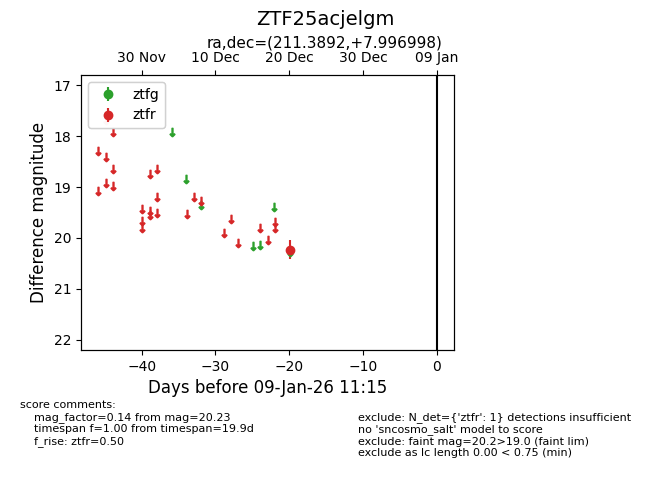
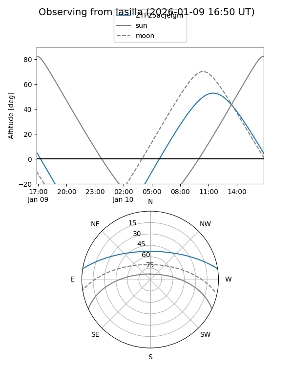
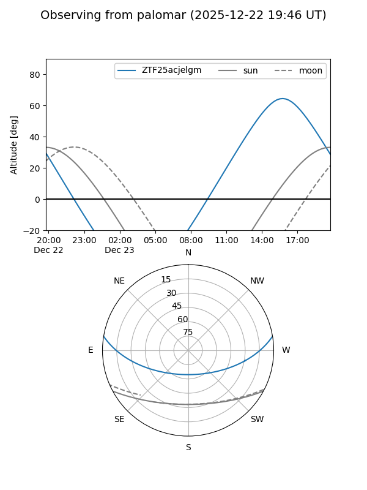

ZTF25acjelgm
Target ZTF25acjelgm at 2025-12-20 16:37
Aliases and brokers:
FINK: fink-portal.org/ZTF25acjelgm
Lasair: lasair-ztf.lsst.ac.uk/objects/ZTF25acjelgm
ALeRCE: alerce.online/object/ZTF25acjelgm
alt names
ZTF25acjelgm (ztf,fink_ztf)
Coordinates:
equatorial (ra, dec) = 211.3892,+7.99700
equatorial (HMS+DMS) = 14:05:33.41,+07:59:49.19
galactic (l, b) = (348.8927,+64.03753)
Flags:
Photometry:
last ztfr=20.23
1 ztfr detections
Lightcurve

Visibility


Additional plots